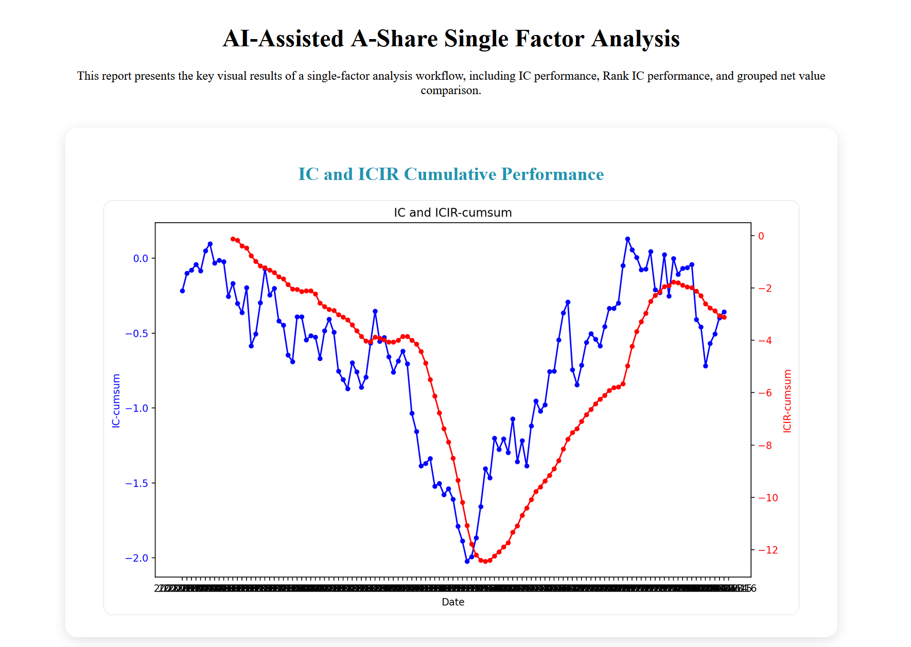

Selected projects built with Python, data analysis, and AI-assisted workflows.
A quantitative research workflow for analyzing single-factor effectiveness in the A-share market.

This project uses Python and Jupyter Notebook to build a single-factor analysis workflow for the SSE 50 stock universe. It focuses on solving the repetitive and error-prone process of factor research, including data loading, factor cleaning, return alignment, industry data processing, IC analysis, grouped return testing, and visualization.
Traditional factor research often requires repeated data cleaning, manual field matching, and fragmented backtesting code. This project aims to create a reusable research template that improves the efficiency of factor testing and strategy validation.
AI was used as a coding and research assistant throughout the workflow. It helped with project structure design, code generation, debugging, data-processing logic, and error diagnosis. The project follows a long-chain reasoning process: first checking data fields and time indexes, then cleaning and transforming factor values, aligning return data, calculating factor effectiveness metrics, and finally interpreting the stability of results.